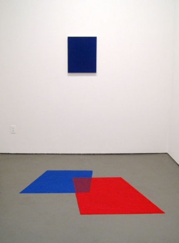

-
2009 at White Columns
by Stephen Squibb December 18, 2009
When I was younger I had a friend whose family only listened to the oldies station. Riding in their mini-van, I remember wondering why it was that, song for song, the old songs sounded better than the new ones. Furthermore, I couldn’t figure why, despite this fact, I certainly didn’t want to be listening to the oldies station. It only occurred to me later that the music sounded better because it was better, having been sifted from two or more decades of pop hits. This was a significantly larger sample size than was available to contemporary culture industry outlets, but the latter’s claim to the new still made for more compelling listening, day in and day out.
Perhaps this quality-gap accounts for the lazy, listless pleasure with which we come across retrospectives, year-end lists, and the various other summaries scrambling to define a given annum. We are pleased because the quality is higher, but also a little bored because, well, it’s already over. At the extremes, this dynamic accounts for both the comfortable fatigue of art history textbooks and the animated outrage of an awesomely bad, present-tense failure.
The White Columns Annual aims to avoid the pitfalls of the year-end genre by presenting itself as “an exhibition based on [one person’s] experience of looking at art in New York in the previous year.” Aiming at a “format [that] inevitably encourages [a] highly subjective and deeply personal response to the realities of viewing art in New York,” the not-for-profit hopes to offer one unique take rather than a summary of the whole thing. It is perhaps a credit to the various curators, or ‘selectors,’ as well as the selector selector, that the Annual has taken on a slight bit of the authority it never aspired to in the first place.
Primary Information, this year’s selector and a New York-based non-profit “devoted to printing artist books, artist writings, out of print publications and editions” does little to jeopardize this positioning, but nor does it do much to expand it either. The show doesn’t feel particularly subjective, but it does feel smart, even a little calculated, and how you feel about the stated goal of the Annual will probably determine how you feel about this edition. If, for example, you share Holland Cotter’s belief, carefully quoted in the press release that “The White Columns Annual does … what the Whitney Biennial used to do: it reconsiders a slice of art’s immediate past. … The idea is welcome affording a chance to linger over art that was seen earlier only in rushed visits, missed entirely or enthusiastically remembered…” than you will be pleased to find a number of the significant hits from 2009 available here again.If, however, you sympathize, as I think I do, with the original, stated goal of the Annual, you cold be forgiven for hoping for a slightly more, well, highly subjective and deeply personal presentation. In this sense, it is hard to see Looking Back as particularly revelatory as to what Primary Information’s year in art was like, given their mission statement. Personally, I would have been fascinated to see what that show would be like. As it is, the only piece here that really seems to reflect the specificity of the selector is a three-dollar zine compiling every negative review run by the Times over the previous year. It’s a maddening document, frequently illegible and ultimately quite compelling. Partly an exercise in determining the moment a review moves from reportage to criticism, and then again towards negativity, either implicit or otherwise, it is most definitely a delightfully unique take on the past year. Cynically emblazoned with a photocopied ARTFORUM title across the back, the zine fully justifies whatever remains of the Annual’s initial instinct towards subjectivity.
But it is an Annual after all, not a diary, and the real point is that Primary Information does a thorough and elegant job revisiting the year that was. A lot of the highlights are here; Dorothy Iannone, Seth Price, Reena Spaulings, and the consensus favorite from YTJ, Cyprian Gaillard’s Desniansky raion. The last was especially gratifying to re-encounter a second time in a less hectic setting. Much praise has already been heaped on Gaillard, making his inclusion here an obvious choice, the most obvious one in the show, in fact, but as obvious choices go, it’s likely the best that could have been made. Desniansky raion is evidently excellent in the way that defeats any backlash or fatigue; precisely the sort of work that shows like this are made for.
The inclusion of one of Seth Price’s calendar paintings is also well-taken. Made in 2003 and 2004 but not widely exhibited until 2009, (when they were shown at, where else, Reena Spaulings, but that’s another kettle) the calendars provide a fascinating glimpse of a moment when Price’s conceptual thinking and artistic output were maybe not quite so separate as they are today.
If there is a signature piece here, though, its Georgia Sagri’s. In a videotaped performance, the artist appears outside of some elite event, likely art related, and proceeds to recite a singsong chant at the top of her lungs. “Is everybody having fun here/I’m asking you/I’m asking you” she repeats again and again until she’s exhausted, out of breath and leaning against an unlucky car trying to sneak past.
At first look, its a shallow gag, obnoxious and obvious and not immediately interesting. But when you consider the year that was, the collapse of the economy, the cratering of the art market, the general social and political madness, and then look around at the neatly executed, almost chilly art objects that make up the rest of the Annual, Georgia’s begins to seem like the most honest expression in the room.
Certainly at the height of the booming aughties art traded some of its political edge for an abstract criticality and the desire for a really good time. Everybody was having fun, not only here, but everywhere or was at least suitably afraid to admit it if they weren’t. Sagri’s desperate refrain, rendered on a small screen with headphones, captures vividly the creative and financial hangover many of us have yet to fess up to.

{kind=link}
{kind=link}
{kind=link}